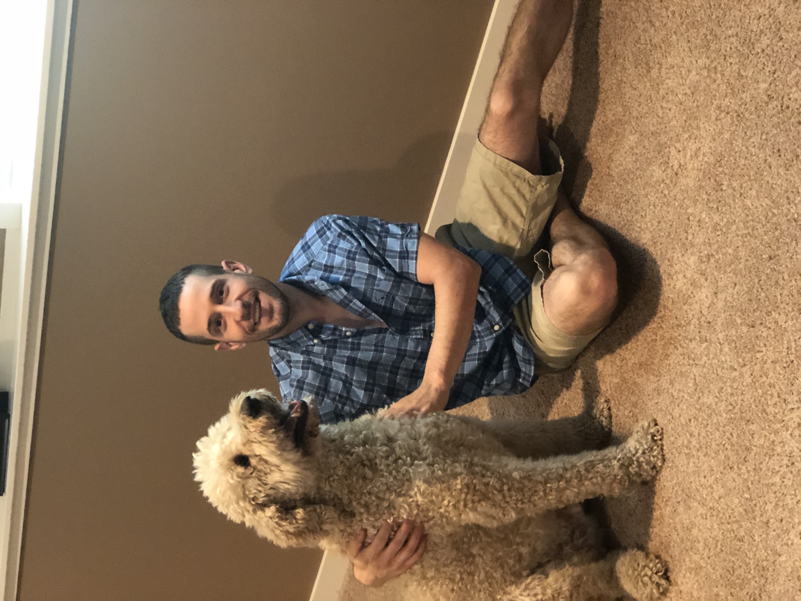

Marshall is a golden doodle born on November 2nd, in Dayton Ohio. He has lived in Michigan, Ohio, Florida, and North Carolina. There's a lot to love about Marshall. He is always happy to see you and give you a face licker. He is in his element when there are other people and dogs around because... he love everything.
Some of Marshall's favorite hobbies include long walks, taking naps, eating dinner, and unsuccessfully chasing squirrels. Marshall is always there to lift your spirits. He is a loyal companion and the best friend you could ask for!